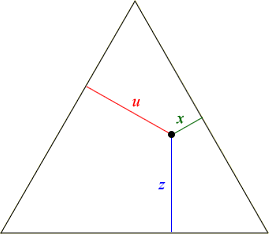

Design space for mixtures of 3 ingredients
Although a mixture of 3 ingredients can be considered to have 3 factors, the design space is really 2-dimensional because of the constraint that all three factor levels (proportions) must sum to one. This design space can be represented by an equilateral triangle (all sides of equal length).

In this triangle, any mixture of the three ingredients with proportions x, z, and u corresponds to a point in the triangle with perpendicular distances x, z, and u from the three edges.
Each edge corresponds to proportion 0 for one ingredient and the opposite vertex represents to proportion 1.
Scales for the proportions in 3 dimensions
The diagram below shows the design space (equilateral triangle) in three dimensions.
Click Show Orange scale to rotate the diagram and observe that the leftmost edge corresponds to proportion 0 of orange and the opposite vertex corresponds to proportion 1.
Click the other buttons and observe that the other edges and opposite vertices correspond to proportions 0 and 1 of the other fruit juices.
Representation in 2 dimensions
The next diagram shows the triangular design space in two dimensions. Three scales have been added and any design point has proportions that can be read off these three scales.
Click each design point for the simplex-centroid design and observe that the proportions of the 3 juices are given by the 3 scales.
You can also change the design to a simplex-lattice design and again click the design points to check that the scales give the appropriate proportions.